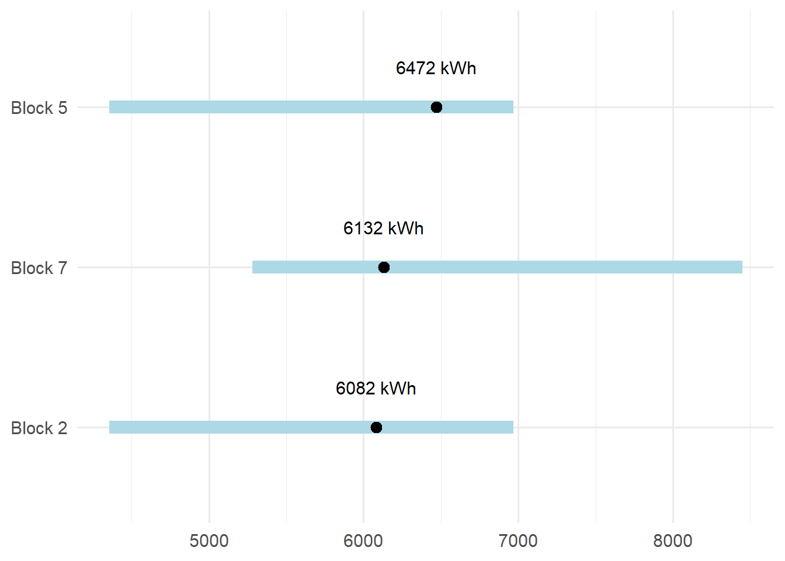
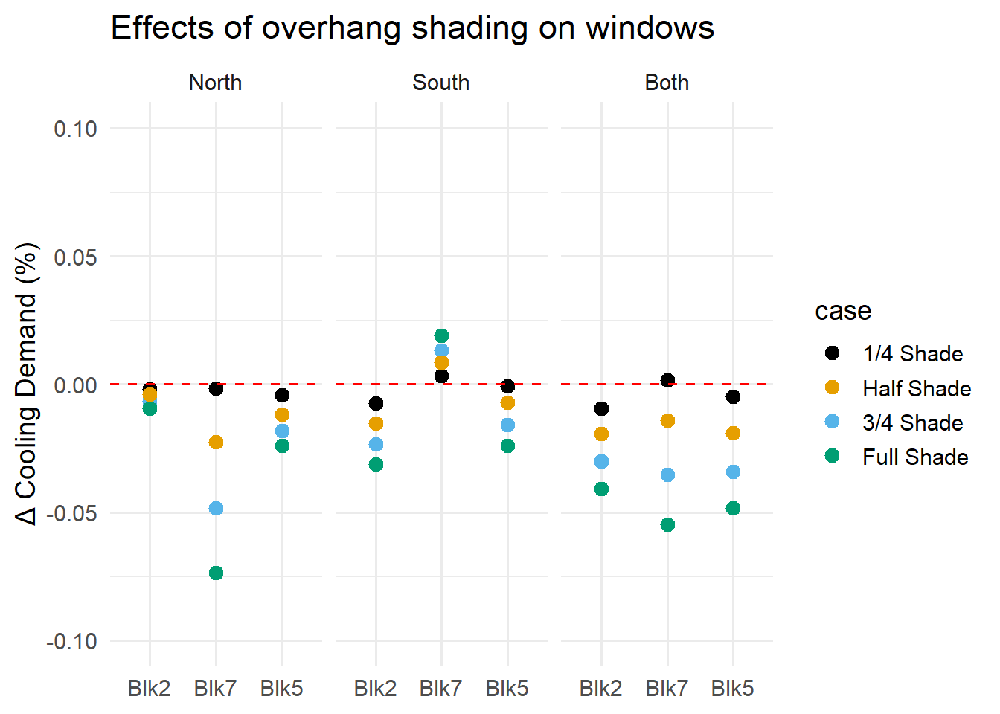
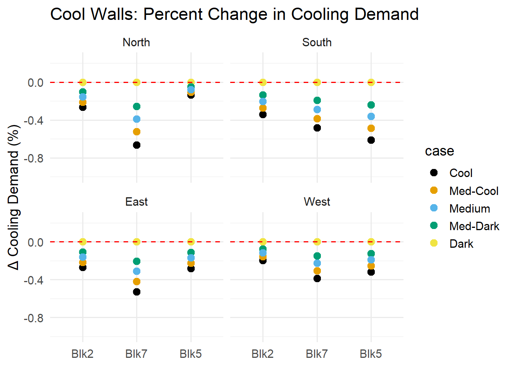
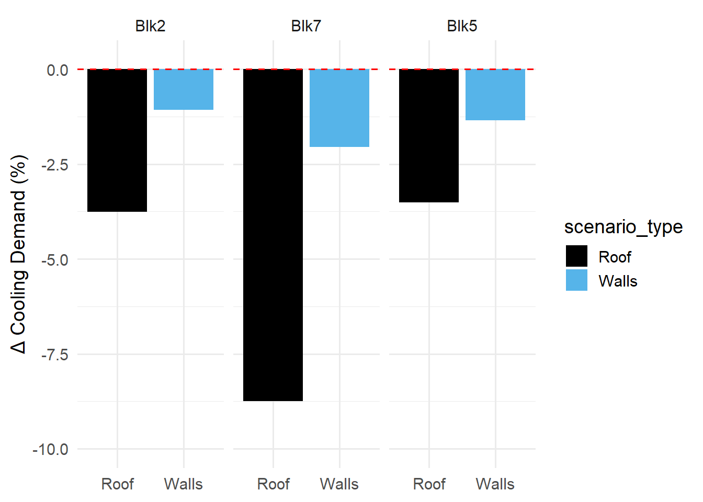
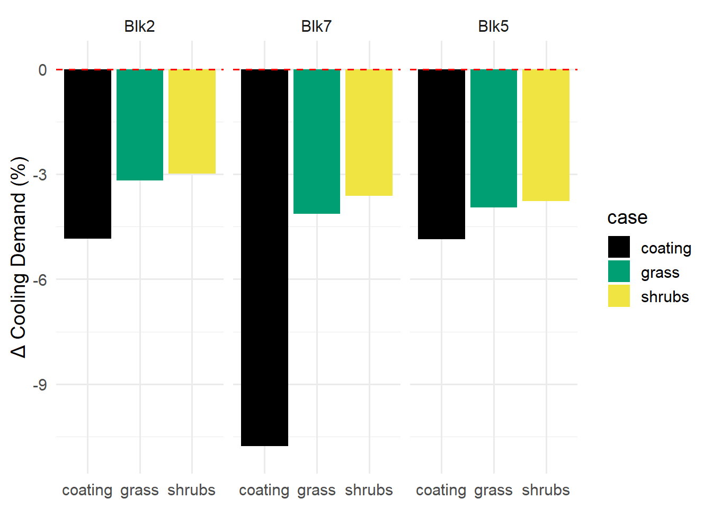

![]()
| Discipline | Energy retrofit measures | Building component |
|---|---|---|
| Design | Overhang shading | Windows |
| Engineering | High reflectance coating | Walls, Roof |
| Nature | Roof vegetation | Roof |
Evaluating Retrofit Strategies for Urban Heat Resilience: A Singapore Case Study
Introduction
The building sector currently comprises a large percentage of worldwide energy consumption [1]. With the rise of climate change and energy efficiency policies, the need to improve energy efficiency in the existing built environment is vital [2]. Building energy consumption is a especially a challenge in the tropics, where high temperatures and high humidity lead to the use of large amounts of energy for cooling and de-humdification [3]. Energy retrofit measures have gained lots of traction in recent years due to their potential to increase building energy performance, provide cost savings, and lower environmental emissions. Facades are a key focus area in retrofit designs as they are an essential element of the building’s performance. The building facade is the primary interface between the indoor and outdoor environments, filtering heat, light, and air before reaching the interior [4].
Background info on ERM studies then novelty of my work
The objectives of this report are as follows:
To compare the cooling demand impacts of three passive energy retrofit measures
To examine how retrofit effectiveness varies across multiple blocks in the same complex
To assess whether observed energy savings are robust or block-specific
Old stuff: While the design of new, efficient buildings is also a research area of interest, these projects require immense amounts of resources and energy. Retrofit measures provide an effective, sustainable solution to increase building energy performance while avoiding issues related to land-use and deforestation. Facades are a key focus in retrofit designs as they are the facilitator between the indoor and outdoor worlds. Passive-design strategies, in particular, provide easy to implement and simple interventions that can have a large impact on the building’s total energy consumption.
- Mention the structure of the report, what the reader will find in each section etc.
Methodology
Target buildings and simulation setup
A typical high-rise, public residential complex in Singapore was selected for this study. Everton park consists of seven, 12-storey-high buildings facing north or south, in the configuration shown in Figure 1.

Buildings of interest in this study are the central building, block 7, and the buildings directly north and south of it, blocks 2 and 5, respectively. Evaluating multiple blocks allows for a more robust simulation of energy retrofit measures (ERMs), as they will be applied to buildings with different relative positions, solar exposure, and boundary conditions.
Energy consumption in each building was modeled using EnergyPlus, a widely-used physics based building energy modelling (BEM) program (source). Energy models developed by [5] were used as a baseline for this analysis. All parameters relevant to replicating the models including floor plans, zoning, construction materials, air-conditioning settings, and schedules can be referenced in their work. The weather file used in all simulations is the developed microclimate data by (source) which proved to perform better than historical or measured weather datasets for building energy modelling.
Energy consumption due to air-conditioning is the main target area for this analysis. To represent this as an output meter in EnergyPlus, Cooling:EnergyTransfer was selected. This output meter represents how much cooling energy the building needs to maintain comfort. It does this by measuring how much heat must be removed from all zones to maintain temperature setpoints. Using this output metric, the percentage change between the baseline case and the retrofit case was calculated to identify the significance of the ERM.
Selection of energy retrofit measures
After conducting a literature review on common ERMs used in energy simulation models, three ERMs from different disciplines were chosen to expand the breadth of the study including: design, engineering, and nature based retrofits. Table 1 lists the ERMs as well as the building component they correspond to, namely, windows, exterior walls, and exterior roof. Shading and coating ERMs were simulated individually by adding and/or adjusting one component in the model. If the reduction in cooling demand was deemed significant, a combination of the ERM with a roof ERM was then simulated to determine the maximal possible energy savings for each block.
Baseline case simulation and verification
To determine a baseline cooling demand for each of block, the existing IDF models were simulated with the developed microclimate weather dataset. The baseline case as well as all retrofit scenarios were simulated for June 2015. A daily reporting frequency was selected for the Cooling:EnergyTransfer output meter; therefore, the daily outputs were summed to calculate the monthly cooling demand. Weekends were not considered in the analysis and were thus subtracted from the monthly total. The Cooling:EnergyTransfer output meter returns a thermal energy (heat removed from the zone). To calculate electricity used for cooling, Equation 1 was applied. Where \(E_{el}\) represents the electricity input to the AC unit, \(Q_{cool}\) is the heat removed from the zone for cooling, and COP is the coefficient of performance, which is set to 3. The simulation period and COP are consistent with [6]. \[E_{\mathrm{el}} \;[\mathrm{kWh_{el}}]=\frac{Q_{\mathrm{cool}} \;[\mathrm{kWh_{th}}]}{\mathrm{COP}} \tag{1}\]
The models were verified using published data on public housing monthly electricity consumption [7] and the percentage of household electricity used for air-conditioning [8]. Ranges were selected around the published values to encompass both conservative and high electricity use: 250-400 kWh for household monthly electricity consumption and 20-25% of electricity use attributable to AC. Equation 2 was used to calculate upper and lower bounds for the monthly AC electricity consumption of each building. Where \(p_{AC}\) is the percentage of total monthly electricity consumption per household used for cooling, \(E_{tot}\) is the total monthly electricity consumption per household, and \(N_{flats}\)is the total number of flats in individual residential buildings.
\[ \ E_{AC} = p_{AC} * E_{tot} * N_{flats} \tag{2}\]
Figure 2 shows the range of reference values tested and where each baseline model falls within the range. All baseline values fell on the more conservative side of the range, which is plausible because the model uses an ideal loads cooling system. Block 7 shows a very conservative estimation likely because the monthly energy consumption scaled linearly with the number of flats, but the model does not, it also considers relative location and shading from surrounding blocks (idk if I want to claim this already). Since all baseline values fall within the benchmark ranges, they were deemed suitable for a comparative analysis of retrofit scenarios.

Results
Shading
Solar shading devices play an important role in building energy and thermal behavior. In hot and humid climates like Singapore, shading can prevent excessive solar gain, lowering cooling demand. When implementing solar shading on windows, it is important to consider both solar radiation regulation and satisfactory levels of natural light and visibility to the outdoors [9]. While many residential buildings make use of internal shading devices, external devices are more effective in reducing cooling loads because they can intercept and reduce solar radiation before it reaches the glass panes [10]. (Add mechanism sentence)
For this study, horizontal overhangs on windows were chosen as the retrofit measure, which corresponds to the EnergyPlus input Shading:Overhang:Projection. Overhang depths were varied as a fraction of the window height including values of: 0.25, 0.50, 0.75, and 1.00. Windows in this model are only on the north and south facing facades. To test differences in response of the north and south facing facades, overhangs were applied on each facade individually then on both. Since overhangs were not a part of the baseline model, a placeholder overhang was created on each window before running a parametric simulation for overhang depths.
Figure 3 shows the results for the overhang shading parametric analysis for north facing windows, south facing windows, and all windows for each block. The results indicate that as the overhang depth increases, the percent change in cooling demand also increases. However, the results are of such a small magnitude, \(\pm\) 0.1% change, that they are deemed insignificant and will not be used in comparative analysis with other retrofits.
Shading likely did not have an effect on the overall cooling energy demand due to the climate sensitive design of the buildings. The buildings all have a north-south orientation with no windows on the east and west facing facades, strategies to minimize solar heat gains in Singapore [3]. Since the sun is almost directly overhead during June in Singapore, windows on the north and south facades get very little sun exposure, thus the shading had a limited effect. Also, the baseline models consider both corridor and inter-building shading which may already provide sufficient shading on the north and south facades (should I include this line?).

Coating
Reflective or cool materials are considered an effective method for decreasing building thermal loads (source coating). Light color coatings, for example, can be applied to any building surface to increase albedo, the fraction of sunlight reflected by a surface. (Add mechanism sentence)
To implement cool coatings in the models, the solar absorptance of the exterior walls and roof materials were varied from a range of dark to cool, including values: 0.7, 0.5, 0.4, 0.3, and 0.2. The coatings were applied systemiatically, to identify if any facade wall had a larger response. The general methodology in EnergyPlus was as follows: a new material was created with the desired solar absorptance, followed by a new construction of the exterior wall and/or roof, and finally, the new construction was applied to the desired facade.
Figure 4 shows the results for parametric analysis of cool coatings on each facade wall. The results indicate that as solar absorptance decreases, the percent change in cooling demand increases. Thus, for the remaining retrofit scenarios, a solar absorptance of 0.2 will be used. Additionally, the facade walls all demonstrate a similar, limited, response with less than a 1% change in cooling demand. Indicating that no facade wall, alone, yields a more beneficial response.

Next, the application of coating on all facade walls was compared to coating on the roof, displayed in Figure 5.

The data shows that coatings on the roof have a much larger impact than coatings on the exterior walls. Best case scenarios for rooptop and wall savings are 8.75% and 2.06%, respectively. This is as expected, since the roof is far more sun exposed due to Singapore’s sun path. It is interesting to note that block 7, the central building, outperformed both surrounding buildings, which had similar cooling demand savings. The cool coating on block 7 more than doubled the savings of blocks 2 and 5.
Green roof
Green roofs (GRs) are a form of urban greenery that is beneficial in reducing a building’s heat gain and energy consumption (and mitigating the Urban Heat Island effect) [3]. They can help provide thermal insulation to the interior spaces below it, maximizing indoor thermal comfort and minimizing cooling needs [11]. The benefits of GRs can be explained through four main mechanisms including: insulation, evapotranspiration, shading, and wind barrier effect [12].
EnergyPlus utilizes a built-in module to simulate GRs, based on a heat balance principle between the soil layer and vegetation layer [13]. The module accounts for sensible heat flux, latent heat flux, and long- and short-wave radiation.
To add a GR to the baseline model, a new vegetation material was created, followed by a new construction. The new construction was then applied to the exterior roof, following a similar setup to the cool coatings. Two cases of GRs were simulated with details presented in Table 2. For this study, only the leaf area index and plant height were varied between cases. All other parameters related to the vegetation material, such as substrate thickness and soil conductivity, were set to the default EnergyPlus values. The two cases represent a green roof with grass, which covers the roof more extensively (higher LAI) but has a shorter plant height, and shrubs, which cover less of the roof area (lower LAI) and have a higher plant height.
| Parameter | Grass | Shrubs | Source |
|---|---|---|---|
| Height of plants (m) | 0.15 | 1.00 | Parametric variable |
| Leaf area index (LAI) | 3.00 | 1.50 | Parametric variable |
| Leaf reflectivity | 0.20 | 0.20 | Default |
| Leaf emissivity | 0.95 | 0.95 | Default |
| Minimum stomatal resistance (s/m) | 180.00 | 180.00 | Default |
| Substrate thickness (m) | 0.10 | 0.10 | Default |
| Conductivity of dry soil (W/m·K) | 0.35 | 0.35 | Default |
| Thermal absorptance | 0.90 | 0.90 | Default |
Each green roof was paired with a cool coating on all facade exterior walls for simulation. Figure 6 shows a comparison between both GRs and complete coating, on all facade exteriors. The GRs on all blocks performed similarly, with grass demonstrating slightly better cooling demand savings. For blocks 2 and 5, the cool coating slightly outperformed the GRs. For block 7, however, the cool coating more than doubled the energy savings of the GRs, which is consistent with the results seen when comparing the coating on the walls vs the roof.

Evaluation
Each ERM tested, with the corresponding block, is categorized in Table 3 based on their energy rating. The energy rating is a function of \(p\), the percentage reduction in cooling energy demand which is calculated using Equation 3.
\[ p = \frac{E_{retrofit} - E_{baseline}}{E_{baseline}} * 100 \tag{3}\]
| Monthly Energy Saving (%) | Energy Rating | ERMs (block) |
|---|---|---|
| 5 < p ≤ 10 | High | CR (7), CR+CW (7) |
| 2 < p ≤ 5 | Moderate | CR (2,5), CR+CW (2,5), GR+CW (2,7,5) |
| p ≤ 2 | Low | CW (2,7,5), GR (2,7,5), S (2,7,5) |
Conclusion
bla bla bla
References
[1]
S. Sarihi, F. Mehdizadeh Saradj, and M. Faizi, “A critical review of façade retrofit measures for minimizing heating and cooling demand in existing buildings,” Sustainable Cities and Society, vol. 64, p. 102525, 2021, doi: https://doi.org/10.1016/j.scs.2020.102525.
[2]
A. Martinez, M. Patterson, A. Carlson, and D. Noble, “Fundamentals in façade retrofit practice,” Defining the future of sustainability and resilience in design, engineering and construction, vol. 118, pp. 934–941, Jan. 2015, doi: 10.1016/j.proeng.2015.08.534.
[3]
Building planning and massing. in Green building platinum. Singapore: Building and Construction Authority, 2010.
[4]
D. Richards, “The importance of façade design,” Sustainable Retrofitting of Commercial Buildings: Cool Climates, p. 140, 2014.
[5]
L. Xu et al., “Better understanding on impact of microclimate information on building energy modelling performance for urban resilience,” Sustainable Cities and Society, vol. 80, p. 103775, 2022, doi: https://doi.org/10.1016/j.scs.2022.103775.
[6]
L. Xu et al., “Better understanding on impact of microclimate information on building energy modelling performance for urban resilience,” Sustainable Cities and Society, vol. 80, p. 103775, 2022, doi: https://doi.org/10.1016/j.scs.2022.103775.
[7]
“Singapore Energy Statistics 2025,” Energy market authority. https://www.ema.gov.sg/resources/singapore-energy-statistics.
[8]
“Four In Five Households Motivated To Save Energy If They Can Save Money: NEA Study,” National Environment Agency, May 2018.
[9]
C. Carletti, F. Sciurpi, and L. Pierangioli, “The energy upgrading of existing buildings: Window and shading device typologies for energy efficiency refurbishment,” Sustainability, vol. 6, no. 8, pp. 5354–5377, 2014, doi: 10.3390/su6085354.
[10]
G. Kim, H. S. Lim, T. S. Lim, L. Schaefer, and J. T. Kim, “Comparative advantage of an exterior shading device in thermal performance for residential buildings,” Energy and Buildings, vol. 46, pp. 105–111, 2012, doi: 10.1016/j.enbuild.2011.10.040.
[11]
Y. Zhao et al., “Beating urban heat: Multimeasure-centric solution sets and a complementary framework for decision-making,” Renewable and Sustainable Energy Reviews, vol. 186, p. 113668, 2023, doi: 10.1016/j.rser.2023.113668.
[12]
K. C. Dahanayake and C. L. Chow, “Comparing reduction of building cooling load through green roofs and green walls by EnergyPlus simulations,” Building Simulation, vol. 11, no. 3, pp. 421–434, Jun. 2018, doi: 10.1007/s12273-017-0415-7.
[13]
D. J. Sailor, “A green roof model for building energy simulation programs,” Energy and Buildings, vol. 40, no. 8, pp. 1466–1478, 2008, doi: 10.1016/j.enbuild.2008.02.001.